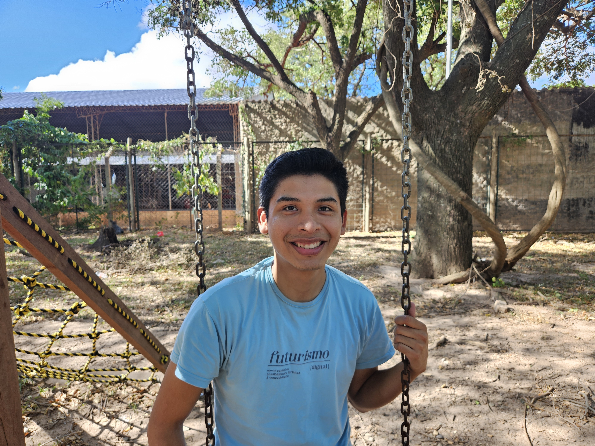

Josue Covarrubias
Email: josuecovarrubias8@gmail.com
Teléfono: 77616799
Ubicación: 6to. Anillo, Santa Cruz, Bolivia
Universidad: Universidad Autónoma Gabriel René Moreno (5to Año)
Carrera: Ingeniería de Sistemas
Perfil personal
Soy una persona altamente responsable y persistente, con gran iniciativa y espíritu colaborativo. Orientado al trabajo en equipo, adaptable al cambio y enfocado en la mejora continua. Comprometido con alcanzar los objetivos organizacionales.
Experiencia profesional
Springboard (EE. UU. – Remoto) | Especialista en Ingreso de Datos
Oct 2025 – Presente
- Analicé y validé registros familiares históricos comparando imágenes archivadas con árboles genealógicos digitales.
- Realicé limpieza y verificación de datos para mejorar la calidad e integridad de los mismos.
Dataforgex, (Argentina – Remoto) | Desarrollador Frontend Junior
Ene 2025 – Ago 2025
- Desarrollé funcionalidades para el usuario utilizando JavaScript, React, HTML, y CSS, colaborando con el equipo de backend para asegurar una integración fluida.
- Traduje diseños y wireframes a código de alta calidad, optimizando componentes para un máximo rendimiento en distintos dispositivos y navegadores.
- Participé en revisiones de código y ceremonias Ágiles, contribuyendo a la mejora continua y la colaboración en equipo.
Instituto The English House | Profesor
Feb 2022 - Jul 2022
Enseñé a estudiantes de 14 a 45 años en un entorno virtual.
Formación académica
-
UNIVERSIDAD AUTÓNOMA GABRIEL RENÉ MORENO (5TO AÑO)
Ingeniería de Sistemas • Ene 2021 - Presente -
FUNVAL INTERNACIONAL
Desarrollo Web Front-End • Ago 2024 – Dic 2024 -
Ensign College
Certificado de Contabilidad Básica • Abr 2023 - Dic 2023 -
Curso de Excel Intermedio, [UAGRM]
Abr 2024 - May 2024
Habilidades y Tecnologías
- Resolución de problemas
- Trabajo en equipo
- Comunicación efectiva
- Adaptabilidad
- Responsabilidad
- HTML, CSS, JAVASCRIPT
- REACT, NEXT JS
- SQL Microsoft